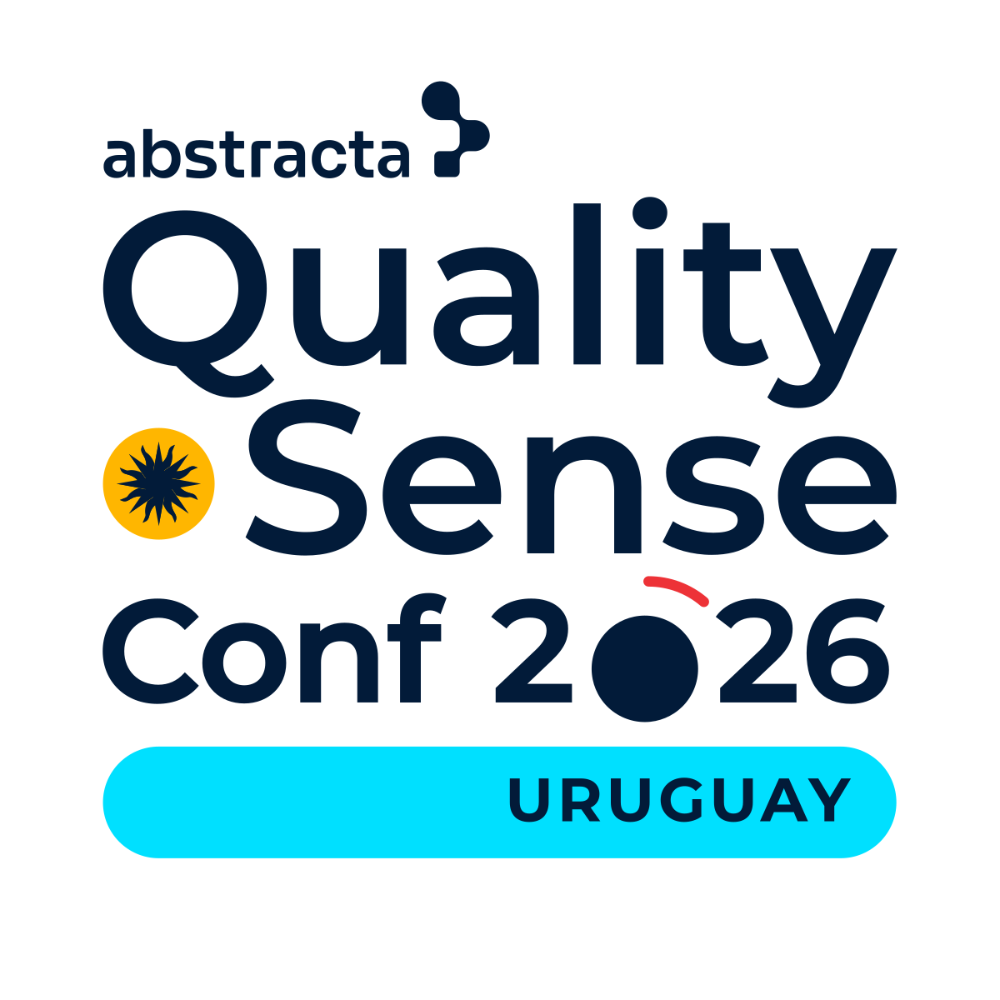

Construir confianza en la era de la IA
De cero a un equipo con IA
Quality Sense Conf 2026 · Maria Laura Saavedra
Maria Laura Saavedra — Montevideo, Uruguay
Quality Sense Conf 2026 — organizado por


Maria Laura Saavedra — Montevideo, Uruguay
Quality Sense Conf 2026 — organizado por